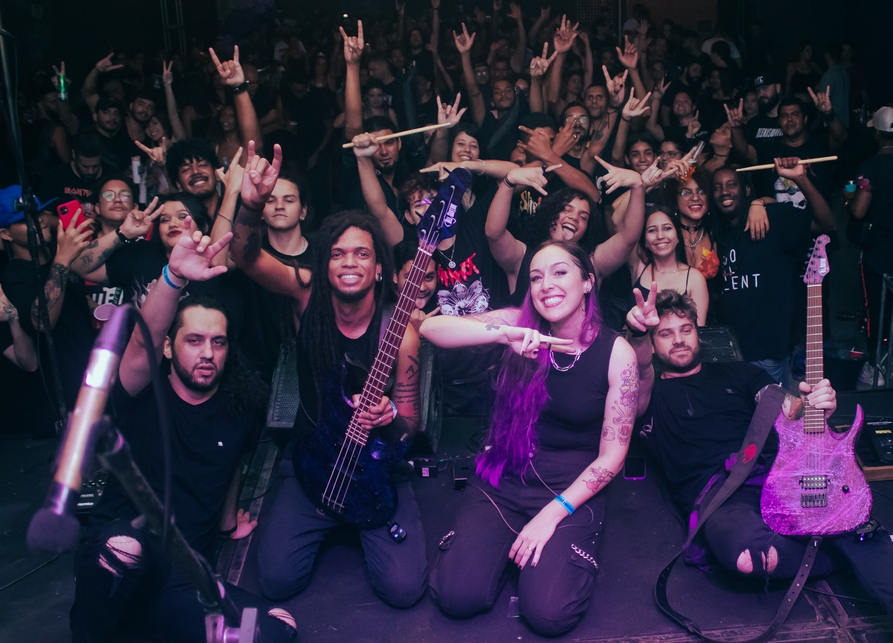

QUINTA-FEIRA - DIA 14
apartir das 17h


15º EDIÇÃO
ONDE A MÚSICA DESPERTA O MUNDO
EVENTO GRATUITO
Veja a programação completa dos artistas que subirão no palco do Wake the Dead Festival!
apartir das 17h
apartir das 17h


apartir das 13h


apartir das 13h


DJ LAGARTO

DJ FESTER
Música, sustentabilidade e pertencimento como base do Wake the Dead Festival.
O festival valoriza a cena autoral e conecta artistas e público em torno de mensagens de resistência, diversidade e fortalecimento cultural da Baixada Fluminense.


O evento integra cultura e preservação ambiental, promovendo práticas de redução de impacto, reciclagem e valorização do patrimônio local.
A proposta fortalece o senso de comunidade com ações afirmativas, acessibilidade integral e participação ativa de públicos historicamente vulnerabilizados.

Resultados que o Wake the Dead já entregou para o território e para a cena cultural.
Mais que um passeio, uma experiência.

O Wake Up Tour é uma vivência cultural, educativa e formativa que integra o Wake the Dead Festival. Durante o percurso, você se conecta com territórios, histórias e comunidades locais de Magé através de escuta, troca e aprendizado.


📅 Datas: 16 e 17 de maio
⏰ Manhã (8h40 às 11h30)
👤 +18 anos
⚠️ Vagas limitadas
📄 Inscrição individual
✅ Participação mediante seleção
Compromisso com acesso pleno, acolhimento e participação ativa de todos os públicos.
LIBRAS, audiodescrição, legendas e comunicação em linguagem simples.
Rotas acessíveis, apoio de mobilidade, área reservada e sinalização adaptada.
Equipe capacitada para atendimento inclusivo e respeito às diversidades.
Rua Adam Blumer - Centro - Magé - RJ
(Esquina com a Praça Comendador Guilherme / Praça da Banca de Peixe)
Venha fazer parte da equipe do Wake the Dead Festival!
O festival conta com oportunidades para voluntários em produção, comunicação, recepção, acessibilidade e apoio de operações.
Além de vivenciar a experiência de um grande evento cultural, os voluntários recebem certificado de participação e têm a chance de contribuir diretamente para o sucesso do festival, fortalecendo a cena cultural local e ampliando seu network no setor.
15 edições construindo uma comunidade apaixonada por música pesada.

Allan é o idealizador do Wake the Dead Festival e uma das forças por trás do movimento cultural que conecta música, território e transformação social na Baixada Fluminense. Sua trajetória nasce dentro da própria cena, ainda na época em que foi baterista da banda Nobres Causas, quando os primeiros eventos já carregavam um propósito que ia além do palco.
Com mais de uma década de atuação, Allan consolidou o Wake the Dead como um dos principais pontos de encontro da cena underground regional. Ao longo de mais de 15 edições, o festival abriu espaço para artistas independentes, fortaleceu a música autoral e contribuiu para revelar bandas que posteriormente alcançaram grandes palcos no cenário nacional.
Em 2017, ele ganhou destaque ao propor ideias para o Rock in Rio, como um "Palco Garagem". Veja a Matéria do Jornal Extra.
Além da produção cultural, Allan atua como gestor ambiental, integrando práticas sustentáveis ao festival e alinhando o projeto aos Objetivos de Desenvolvimento Sustentável (ODS). Sua atuação vai além da música: envolve inclusão social, acessibilidade, educação ambiental e fortalecimento da economia local.
A Estética Sonora Produções é uma empresa cultural sediada em Magé/RJ, que atua no desenvolvimento, planejamento e execução de projetos e experiências no setor de artes, cultura e entretenimento. Com visão estratégica e sensibilidade artística, a produtora se destaca pela criação de iniciativas com identidade, organização e impacto no território.
À frente da Estética Sonora está Ingrid Souza, responsável pela condução executiva e articulação dos projetos. No Wake the Dead Festival, a produtora atua como parceira estratégica, sendo responsável pela construção da proposta, estruturação do edital e produção executiva do evento.
Mais do que uma colaboração, essa parceria fortalece o festival como um projeto consistente, viável e conectado com o mercado cultural, ampliando seu alcance e consolidando seu impacto na cena independente.

Confere aí a Linha do tempo com os Flyers de todas as Edições do Wake the Dead.


Instituições e produtores responsáveis.


Espaço reservado para marcas e apoiadores.
Fale conosco através do e-mail: wakethedead@gmail.com